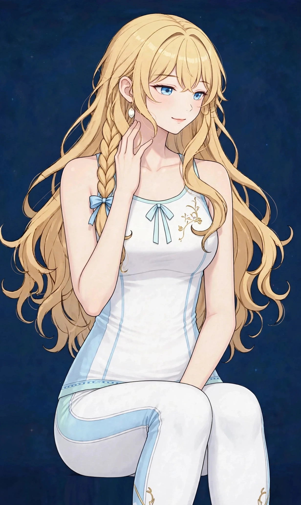

梅田で頬のたるみケア｜美容整体でほうれい線まわりと表情筋にアプローチ｜ステラポラリス 梅田・女性専用美容・見た目
頬が下がって見える、ほうれい線まわりが気になり始めた——年齢のサインとして相談の多い悩みです。表情筋の使い方とむくみの視点から、見え方の仕組みを解説します。
頬のたるみとほうれい線まわりの見え方
ほうれい線は、小鼻の脇から口角へ向かう溝のことです。頬の位置が下がると、頬のふくらみと口まわりの境目がはっきりし、この溝が深く見えるようになります。つまり、線そのものよりも、頬の位置と重さの配分が見え方を決めています。
頬の位置は、表情筋の働き、むくみによる重さ、姿勢や首・肩の状態に影響されます。図1のように頬まわり全体で眺め、どこに重さが集まっているかを見ることが出発点です。なお当店のケアは、ほうれい線を消すことをうたうものではありません。頬の位置と巡りを整え、表情が明るく見えるようアプローチする内容です。
頬の見え方は、照明や表情でも大きく変わります。真顔では気になる線も、自然に笑ったときには目立たないことがあります。見え方を判断するときは、ひとつの表情だけで決めつけず、日常の表情の動きの中で眺めることが大切です。
こんなサインはありませんか？ — 頬のたるみ・ほうれい線まわりのチェックリスト
- 頬の位置が下がって見える
- ほうれい線まわりが気になり始めた
- 笑顔の写真で頬の重さを感じる
- 顔のむくみも一緒に気になる
- 口角が下がって見える
- 無表情の時間が長く、顔がこわばる
- 頬を触ると重く感じる
- 首や肩の張りも一緒に気になる
当てはまる項目が多いほど、頬まわりに重さや使い方の偏りが集まっている可能性があります。次の「要因」と見比べて、自分のパターンを確かめてみてください。
頬が下がって見えやすい要因
- 表情筋の出番の少なさ：無表情で過ごす時間が長い生活では、頬を持ち上げる筋肉の出番が減ります。使われない筋肉は、支える力を失いやすいものです。
- むくみによる重さ：頬に水分がたまると、その重さで頬は下がって見えます。朝と夕方で線の見え方が変わる場合は、むくみの影響も重なっています。
- 姿勢と頭の位置：猫背で頭が前に出る姿勢では、顔全体が下向きに引かれ、頬も下がって見えます。顔の見え方は、首から下の姿勢と無関係ではありません。
- 噛み癖と口まわりの使い方：片側で噛むクセや、口角を下げる表情のクセは、頬の使い方に左右差と偏りを作ります。
- 肌のハリの変化：年齢とともに肌のハリを支える力は変わり、頬の位置は下がりやすくなります。変化は自然なことですが、巡りと使い方の見直しで印象は変わります。
- 乾燥と生活リズム：乾燥した肌では溝が目立ちやすくなります。睡眠不足や疲労も、顔色とあわせて印象に影響します。
図1｜頬まわりへのアプローチ

東洋医学から見た考え方
東洋医学では、頬から口まわりには胃経と大腸経が通るとされ、顔の見立てで重視されるラインです。頬の重さは、水分や巡りの滞りの表れとして捉えられることがあります。
また、顔は全身の状態を映す場所とされ、疲れや冷えが頬の印象にも表れると考えます。施術では、頬まわりだけでなく、首・肩から巡りを助ける進め方を取り、顔全体のバランスを整えます。
代表的なツボ
頬のたるみのケアでよく挙げられる、頬まわりのツボを紹介します。顔の皮膚は薄いため、押すのではなく、指の腹でやさしく触れることが基本です。
図2｜頬とほうれい線まわりの関係
おすすめ施術
美容整体・オイルマッサージ
施術では、まず首・肩・デコルテの張りをオイルマッサージでほぐし、顔まわりの巡りの土台を作ります。そのうえで美容整体で、頬や口まわり、こめかみといった表情筋まわりに、やさしい圧で丁寧に触れていきます。
頬の位置は姿勢にも影響されるため、頭の位置や背中の丸みも一緒に確認します。表情が明るく見えるようアプローチするには、顔まわりのケアと姿勢の見直しの両方が必要です。
施術の前後では、鏡で頬の印象を見比べます。笑顔を作ったときの頬の上がり方も、一緒に確認するポイントです。
自宅でできるセルフケア
頬まわりのセルフケアは「巡りを助ける・表情筋を使う・姿勢を整える」の組み合わせが基本です。頬を強く引っ張るケアは、肌の負担になるため避けてください。
- 1．口角を上げる小さな練習鏡の前で、口角をゆっくり上げて5秒キープを5回。頬を持ち上げる筋肉の出番を作る練習です。作り笑いではなく、自然な範囲で行います。
- 2．頬のなで上げケア口角の横から頬骨の下を通り、耳の前へ向けて指の腹でやさしくなでる動きを左右5回ずつ。力を入れず、巡りを助ける意識で行います。
- 3．あいうえお体操口を大きく動かして「あ・い・う・え・お」と発声する動きを数回。口まわりと頬の筋肉をまとめて使う、取り入れやすい練習です。
- 4．首・肩のストレッチ顔のケアの前後に首と肩をほぐすと、顔まわりの巡りが助けられます。土台から整えることが、頬のケアにもつながります。
図3｜正面から見た頬と口まわり

場面別の注意
写真を撮る予定の前
写真の前は、前日までに施術で巡りと姿勢を整え、当日はよく笑う機会を作ることが、頬の印象を助けます。直前の強いマッサージは避けてください。
無表情で過ごす仕事の日
画面に向かう時間が長い日は、時々口角を上げる練習と首のストレッチを。顔のこわばりをためない小さなリセットです。
むくみが強い朝
頬の重さが強い朝は、蒸しタオルで温めてから、やさしくなでるケアを。むくみのケアについては、顔のむくみのページもあわせてご覧ください。
受診の目安
次のような場合は、サロンでのケアの前に医療機関への受診をおすすめします。
- 顔の片側が急に下がった、表情が作りにくい
- 顔の痛みや腫れが続いている
- 口が開きにくい、噛みにくい状態がある
- 皮膚のただれや炎症がある
- 目の開きにくさなど、顔以外の変化も伴う
当店は医療機関ではなく、診断は行いません。迷うときは、まずかかりつけの医療機関にご相談ください。
よくある質問
Q．ほうれい線は消えますか？
当店のケアで、ほうれい線が消えるといったご案内はしていません。頬の位置や巡りを整えることで、表情の印象が明るく見えるようアプローチする内容です。この点をご理解のうえご利用ください。
Q．頬のたるみと小顔ケアは同じですか？
重なる部分はありますが、小顔のページは輪郭全体、こちらは頬と口まわりに絞った内容です。気になる場所に合わせて、当日の配分を調整できます。
Q．表情筋のトレーニングは効果がありますか？
筋肉は使うことで働きを取り戻す面がありますが、やりすぎはこわばりのもとにもなります。短時間・やさしくを基本に、当日はその方に合った動きをお伝えします。
Q．左右で頬の高さが違うのも気になります
顔の左右差については「顔のゆがみ・左右差」のページで詳しく扱っています。噛み癖や姿勢の見直しとあわせて、当日確認します。
関連するお悩みページ
関連する経絡ページ
ご予約
ステラポラリス（大阪・梅田／女性専用）｜美容整体・オイルマッサージ 90分 10,000円｜月〜土 17:00〜22:00・完全予約制
ご予約はLINE公式アカウントで受け付けています。希望の日時と、気になる場所を送ってください。